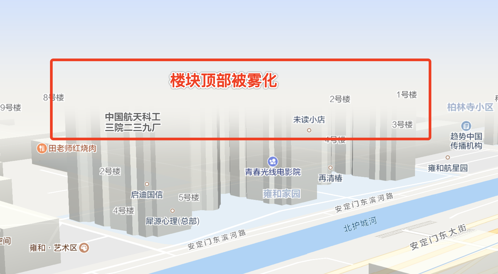

导语：除了画布宽高之外，3D地图的可视范围还受到俯仰角、旋转角度的影响。在大俯仰角情况下，为了降低瓦片加载和渲染的耗时，在地图远端不加载瓦片，瓦片边缘会变得非常突兀。所以需要对瓦片边缘进行雾化处理，实现渐隐效果，优化用户体验。
问题背景
地图的渲染原理请自行了解：Web地图呈现原理，其中重点了解地图数据以瓦片为单位进行加载和绘制这一点即可。在3D地图中，由于有俯仰角和水平旋转角的存在，墨卡托投影上的可视范围与可视窗口大小并不相同，会呈现一个梯形：
当俯仰角增大时，梯形上半部分会快速扩大，导致加载的瓦片过多而影响性能，所以需要对远端瓦片进行截断。而截断后边缘比较突兀，所以需要对边缘做雾化处理，优化体验，如下图。
解决方案
瓦片加载限制
注：下文涉及到3D世界中各坐标系统的相互转换，需提前了解OpenGL坐标系统，以及略懂线性代数，否则可能晕头转向不知所云（画图太麻烦了，见谅）。
在投影空间中地图的俯仰角变化所引起的可视范围的变化如下图左侧所示，45度时瓦片加载数量大约为0度时的1.5倍，并且随着俯仰角增大而快速上涨。为了减少瓦片加载数量，必须舍弃一部分瓦片。考虑到透视投影造成的近大远小，远端的瓦片被压缩后可分辨度很低，所以可以舍弃，即对可视空间的顶部进行裁切。
如何裁切，这里需要先介绍一下可视范围的计算方法。在不考虑裁切的情况下，可视区域的四个顶点均在地图平面（z_world=0平面）上，即顶点在世界空间内的坐标可表示为(x_world, y_world, 0, 1)，然后经过与视图投影矩阵相乘得到裁剪空间坐标，裁剪空间可简单映射到屏幕空间。所以可反推回去，通过屏幕空间的四个顶点，映射到裁剪空间坐标，与视图投影矩阵的逆矩阵相乘后可得到可视区域的四个顶点坐标。其中较难理解的是裁剪空间的z_clip值无法确定，可以取-1和1两个值，逆变换后可得到两个世界坐标确定一条直线，该线与z_world=0平面的交点即最终的顶点坐标。
所以如果要裁切，由上图所示，在世界空间内我们切掉的是顶部梯形阴影部分，所对应到屏幕空间切掉的是顶部矩形阴影部分，那么我们需要得到屏幕空间的一条水平裁切线，即图中的y值。假如以45度时的梯形上半高度为标准，通过简单的几何计算可得其为1.93185 * view.top，可近似为2 * view.top，那么可取世界坐标(0, 2 * view.top, 0, 1)作为裁切点，将其变换到屏幕空间(x_screen, y_screen)即可得到y值，记为fogEdge。之后再根据上文所述的逆变换，使用(0,y), (1,y), (0,1), (1,1)四个顶点反推可视区域的四个顶点。
至此我们得到的俯仰角70度时的瓦片加载效果如下图：
雾化处理
雾化并不难理解，其本质上是一种颜色混合，将本色与雾色（为了适应个性化的地图样式我们使用的雾色与大地颜色保持一致）进行混合。随着混合因子的变化实现渐变效果。可参考WebGL 雾，着色器代码如下所示：1
gl_FragColor = originalColor * (1.0 - fogFactor) + fogColor * fogFactor;
地图是分图层绘制的，若在每个图层的着色器中实现雾化逻辑实在过于冗杂，所以后处理方式更为合理。所谓后处理，即在帧缓冲中绘制完毕后，将缓冲关联的纹理作为输入进行图像处理。为了让渐变效果更平滑，可以使用smoothstep函数让雾化因子从0平滑过渡到1，如下图所示：
着色器代码为：1
float fogFactor = 1. - smoothstep(fogEdge, fogEdge + fogRange, y_screen);
至此我们得到初步的雾化效果如下图：
可见边缘已被雾完全遮盖了，但是顶部仍显空洞，可以加上一点蓝天的背景效果，可以使用纹理也可以使用纯色，仍然也需要一个渐变过程，雾化因子变化如下：
得到效果图如下：
根据深度进行雾化
注：以下内容涉及到深度测试，需提前了解OpenGL深度测试，否则可能晕头转向不知所云。
以上是直接根据纹理纵向坐标计算雾化因子，虽然效果已符合预期，但仍有不合理之处。比如楼块，如果楼块过高，就算其距离视点较近，其顶部仍然会被雾化，不符合自然认知。所以雾化因子应根据深度值进行计算。

深度纹理
一般来说，帧缓冲区对象的深度关联对象为渲染缓冲区对象（renderbuffer object），而渲染缓冲区是无法传入着色器进行读取的，所以需要关联到一个纹理对象。要让纹理对象支持深度值的写入，需要使用一个扩展WEBGL_depth_text，这个扩展使纹理支持gl.DEPTH_COMPONENT格式，同时能支持gl.UNSIGNED_SHORT和gl.UNSIGNED_INT类型，相应代码如下：1
2
3
4
5
6
7// 开启深度纹理扩展
if (!gl.getExtension("WEBGL_depth_texture")) {
console.error("depth textures not supported");
}
// 设置纹理大小
gl.texImage2D(gl.TEXTURE_2D, 0, gl.DEPTH_COMPONENT, width, height, 0, gl.DEPTH_COMPONENT, gl.UNSIGNED_INT, null);
在帧缓冲上绘制完毕后，将深度纹理传入着色器，将其可视化可得到下图（图中仅对需要雾化的部分读取了深度值进行展示）：
深度计算
如上图所示，虽然我们能够获取到深度纹理，但这个深度纹理是不完善的，在没有楼块的地方是一片空白，说明深度值为1即没有写入深度。这是因为：(1) 为了避免深度冲突，除了建筑物之外其他图层绘制时都关闭了深度测试，所以并没有写入深度值；(2) 即使在其他图层上开启了深度测试，使用背景色的地面是没有绘制物的，仍然没有深度值。简单来说，即目前无法获取到大地平面的深度值。
如何获取到大地平面的深度值？其实深度值是可以计算的，参考OpenGL 投影矩阵。不过并不需要知道它的具体公式，只需要了解到透视投影下深度值与观察空间中的1/z_view是成正比的，即depth = A * (1 / z_view) + B。另一方面，我们通过简单的几何计算可以得到：
由此可得大地平面在裁剪空间中的坐标的y值y_clip与深度值depth是成正比关系的，即depth = E * y_clip + F。那么就可以选择两个平面上的坐标点，比如点1(0, 0, 0, 1)和点2(0, 2 * view.top, 0, 1)，通过视图投影矩阵得到(0, 0, z_clip_1, 1)和(x_clip_2, y_clip_2, z_clip_2, 1)，再根据depth = (z_clip + 1) / 2得到depth_1和depth_2，两个方程联立求解即可得到E和F。
1 | float getDepthFromY(float y_clip) { |
至此可以得到纹理上空白处的深度值了，结合从深度纹理中读取的数值，可视化如下：
雾化因子应相应修改为随深度变化：
得到最终的雾化效果如下图：
可以再看看此时的高楼效果：
动态效果参见附件视频。
问题总结
- 无论是可视范围裁切还是深度计算都需要熟练掌握3D的各个空间之间的相互变换关系，需要正反双向思维能力
- 雾化本质上是一种渐变的颜色混合，渐变的维度可自由把握
- 透视投影下深度值与观察空间坐标的1/z成正比
- 深度缓冲和模板缓冲一般是关联到renderbuffer对象，renderbuffer是无法传入着色器进行读取的，在这里使用了texture对象替代了renderbuffer用于存储深度值，在其他应用场景下也可以直接通过着色器绘制深度或模板到颜色缓冲上，提供更高的精度，也能实现更加自定义的功能